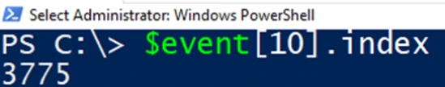
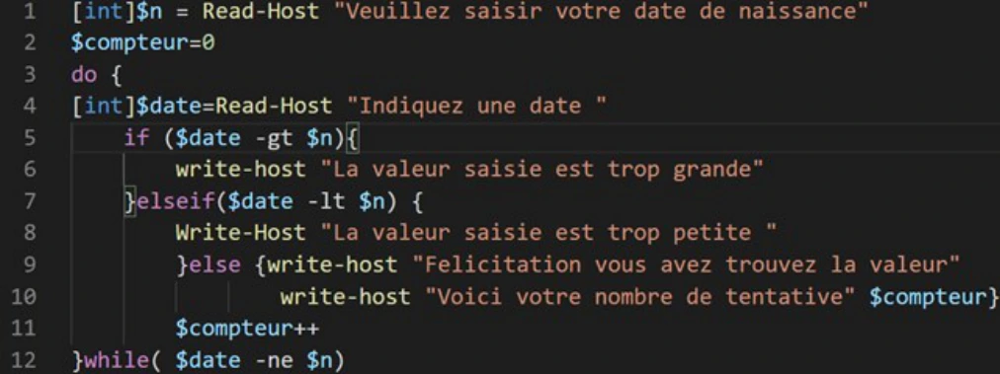
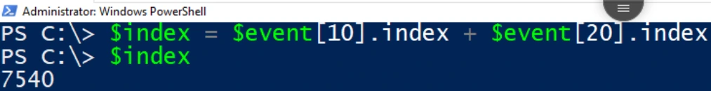
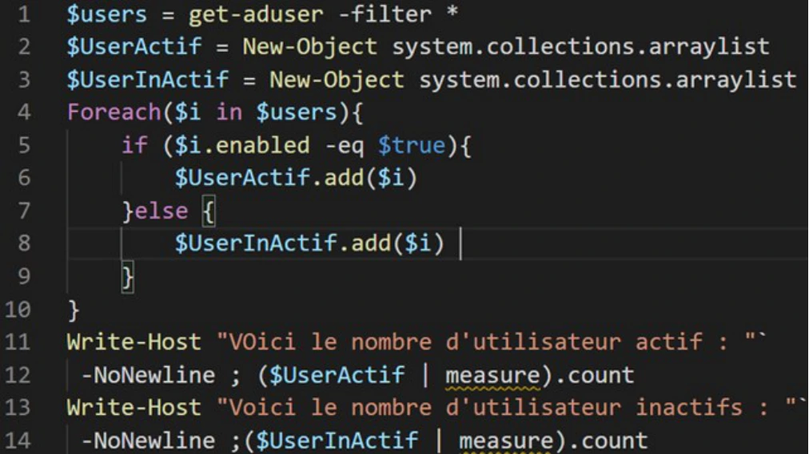
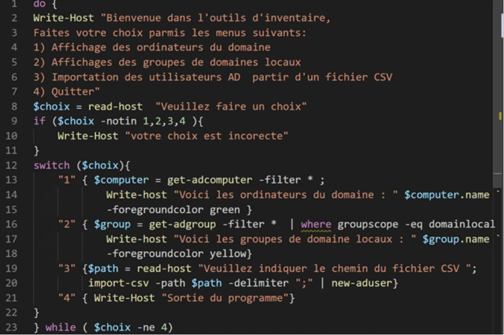

Transcription du support du Drive. Les formulations historiques et les exemples du document sont conservés. Les valeurs d’accès du laboratoire sont indiquées comme « fourni par le formateur ». Les adresses de messagerie personnelles utilisent example.com.
Variables et structures
TP du Module 04
Avant de démarrer ce TP, il convient d’avoir suivi les vidéos du module 4 de ce cours.
Durée estimée
4 heures
Énoncé
Objectifs :
Utiliser les variables dans le langage de commande PowerShell
Intégrer les structures de commandes dans des scripts de base
Consignes :
Depuis la machine CLI01
Stocker dans une variable le résultat de la commande Get-EventLog system.
Quelle commande avez-vous utilisée ?
Affichez l’entrée de journal numéro 10.
Quelle est la valeur de l’Index du journal ?
Créer une variable qui stockera l’addition de l’index de journal numéro 10 et 20. Quelles commandes avez-vous utilisées ?
Capture du support « Solution du TP - Variables et structures »

Capture du support « Solution du TP - Variables et structures »Capture du support « Solution du TP - Variables et structures »
Pour répondre au besoin, vous utiliserez les structures If et DoWhile.
Créer un script qui dans un premier temps demande la saisie de la date de naissance d’un utilisateur, puis dans un second temps demande à l’utilisateur de trouver cette date de naissance en indiquant si la valeur saisie est supérieure ou inférieure.
Si la date saisie est correcte, la boucle s’arrête et l’utilisateur est félicité.
BONUS : indiquez le nombre d’essais effectués par l’utilisateur.
Pour répondre au besoin, vous utiliserez les structures If et ForEach.
Créer un script qui générera deux variables de tableaux $UserActif et $SUserInactif ;
dans chacune sera stockée la liste des utilisateurs actifs et inactifs de votre serveur Active Directory.
Indiquez le nombre d’utilisateurs actifs et inactifs.
Script de la capture
[int]$n = Read-Host "Veuillez saisir votre date de naissance"
$compteur=0
do {
[int]$date=Read-Host "Indiquez une date "
if ($date -gt $n){
write-host "La valeur saisie est trop grande"
}elseif($date -lt $n) {
Write-Host "La valeur saisie est trop petite "
}else {write-host "Felicitation vous avez trouvez la valeur"
write-host "Voici votre nombre de tentative" $compteur}
$compteur++
}while( $date -ne $n)

Capture du support « Solution du TP - Variables et structures »

Capture du support « Solution du TP - Variables et structures »
Utilisation de While / If ou Switch
Réalisez un menu à choix multiples, voici l'affichage attendu :
Bienvenue dans l'outil d'inventaire, Faites votre choix parmi les menus suivants : 1) Affichage des ordinateurs du domaine. 2) Affichage des groupes de domaines locaux 3) Importation des utilisateurs AD à partir d’un fichier CSV 4) Quitter Entrez votre choix :
Si la saisie de l'utilisateur est incorrecte, la saisie doit être proposée à nouveau en indiquant l'erreur.
Indiquez les lignes de commandes utilisées.
Script de la capture
$users = get-aduser -filter *
$UserActif = New-Object system.collections.arraylist
$UserInActif = New-Object system.collections.arraylist
Foreach($i in $users){
if ($i.enabled -eq $true){
$UserActif.add($i)
}else {
$UserInActif.add($i)
}
}
Write-Host "VOici le nombre d'utilisateur actif : "`
-NoNewline ; ($UserActif | measure).count
Write-Host "Voici le nombre d'utilisateur inactifs : "`
-NoNewline ;($UserInActif | measure).count

Capture du support « Solution du TP - Variables et structures »
Chargez dans une variable les objets utilisateurs Active Directory.
Pour chaque utilisateur, réinitialisez le mot de passe puis vérifiez si l’utilisateur est inactif. Activer leurs comptes.
Quelles commandes avez-vous utilisées ?
Script de la capture
do {
Write-Host "Bienvenue dans l'outils d'inventaire,
Faites votre choix parmis les menus suivants:
1) Affichage des ordinateurs du domaine
2) Affichages des groupes de domaines locaux
3) Importation des utilisateurs AD partir d'un fichier CSV
4) Quitter"
$choix = read-host "Veuillez faire un choix"
if ($choix -notin 1,2,3,4 ){
Write-Host "votre choix est incorecte"
}
switch ($choix){
"1" { $computer = get-adcomputer -filter * ;
Write-host "Voici les ordinateurs du domaine : " $computer.name `
-foregroundcolor green }
"2" { $group = get-adgroup -filter * | where groupscope -eq domainlocal
Write-host "Voici les groupes de domaine locaux : " $group.name `
-foregroundcolor yellow}
"3" {$path = read-host "Veuillez indiquer le chemin du fichier CSV ";
import-csv -path $path -delimiter ";" | new-aduser}
"4" { Write-Host "Sortie du programme"}
}
} while ( $choix -ne 4)
Commandes visibles dans les captures
$user = get-aduser -filter *
foreach ($i in $user){
$p = convertto-securestring -asplaintext -force "fourni par le formateur"
set-adaccountpassword -newpassword $p -identity $i.distinguishedname
if ($i.enabled -eq $false){
enable-adaccount -identity $i.distinguishedname
}
}

Capture du support « Solution du TP - Variables et structures »